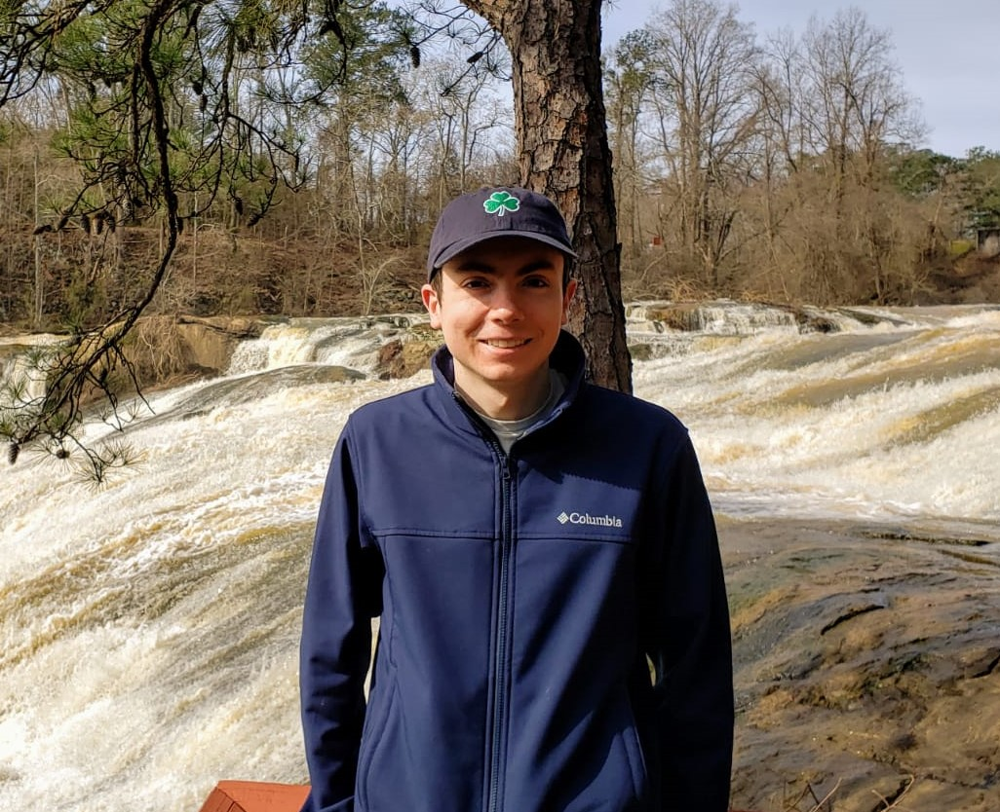

Patrick Corbett's Portfolio
A showcase of my previous posters and reports presented at symposiums and conferences ordered by date
See my Linkedin page for more information

Fall 2014 UVA Katz Sympossium, Charlottesville, VA
Biological science presentation regarding potential radiosensitization of a melaoma chemotherapy trial drug, MLN4924

Spring 2015 UVA Katz Sympossium, Charlottesville, VA
Further results indicating possible radiosensitization of melaoma chemotherapy trial drug, MLN4924. Work in this poster was also included in this paper

2019 Data Science for the Public Good Annual Symposium, Arlington, Virginia
Illustrative presentation of a simulated society experiment conducted by UVA's Biocomplexity Institute and partners. Applications for such research include community and public health crisis incident planning

2020 Vector Borne Disease Forecasting Workshop Hosted by the Council and State Territorial Epidemiologists (CSTE) and Center for Disease Control (CDC), Fort Collins, Colorado
Presentation my my efforts to model the presence of aedes mosquitoes in 95 US counties for each month for the majority of 2019. Poster illustrates how predictions were made for counties in Floria Specifically

2020 Rollins Epi 563 Spatial Analysis Poster Session, Atlanta, Ga
An online "poster" session for fellow classmates as well as invited professionals familiar with the field. Access link to wordpress for full presentation
{kind=link}
Illustrations Included into UVA Biocomplexity's Instutue Presentations to the Virginia Department of Public Health
Work included in weekly/bi-weekly reports to VDH as well as other federal and local health agencies. For example see slides 6,7,13,18 in September 9th's report. Slide 18 similar to the proximate animation but with Virginia districts instead of states
{kind=link}